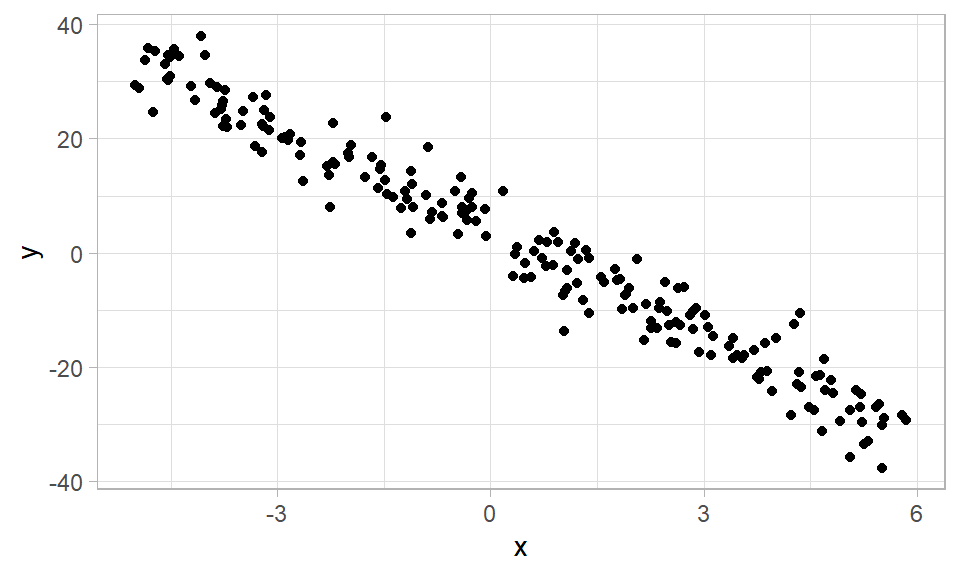

4 Simulación
En este capítulo se muestra como simular datos que sigan un modelo o estructura dada. Aprender a simular datos es de mucha utilidad para comprender la naturaleza de los datos y para poner a prueba algunos procedimientos de modelos de regresión.
Preguntas sobre simulación en StackOverFlow
Una de las preguntas más frecuente que hacen los usuarios en StackOverFlow es: “How to simulate linear models in R?”. Muchas respuestas se han dado para ayudar a esos usuarios que necesitan simular datos con una estructura dada.
A continuación se muestran algunas de esas preguntas/respuestas hechas en StackOverFlow, invito a lector para que visite los enlaces y explore las respuestas dadas.
- How to generate observations from a linear model in R.
- How to generate random Y at specific X from a linear model in R?.
- Simulate data in R from a linear model where the parameters are correlated.
- Create Simulated Data Multiple Regression in R.
- Simulate data from regression model with exact parameters in R.
Las respuestas a cómo simular datos de un modelo lineal son muy variadas, algunas sencillas, otras un poco más complejas, y por esa razón en la siguiente sección se mostrará como simular datos de una forma didáctica.
Simulando datos de un modelo lineal
Para simular de forma exitosa datos de un modelo lineal, se recomienda tener el modelo escrito en forma simbólica el modelo, eso facilita identificar la variable respuesta, su distribución y los parámetros que van a depender de las variables independientes.
A continuación se muestra un ejemplo de como simular observaciones de un modelo lineal.
Ejemplo
Crear una función que simule n observaciones del siguiente modelo que tiene el vector de parámetros \(\boldsymbol{\Theta}=(\beta_0=4, \beta_1=-6, \sigma=4)^\top\).
\[\begin{align*} y_i &\sim N(\mu_i, \sigma^2) \\ \mu_i &= 4 - 6 x_i \\ x_i &\sim U(-5, 6) \\ \sigma^2 &= 16 \end{align*}\]
Solución
Todo modelo en lenguaje simbólico se lee de arriba hacia abajo \(\Downarrow\) pero al escribirlo en R se hace de abajo hacia arriba \(\Uparrow\).
A continuación se muestra la función solicitada la cual sólo tiene un argumento y que entrega como resultado un marco de datos con la información. Estimado lector, mire con detalle el modelo simbólico e identifique todos esos elementos en el código de abajo.
gen_dat <- function(n) {
varianza <- 16
x <- runif(n=n, min=-5, max=6)
media <- 4 - 6 * x
y <- rnorm(n=n, mean=media, sd=sqrt(varianza))
marco_datos <- data.frame(y=y, x=x)
return(marco_datos)
}Vamos a poner a prueba la función para simular 5 observaciones de la siguiente manera.
## y x
## 1 17.137379 -2.758737
## 2 -7.832963 2.090143
## 3 -24.872553 4.878397
## 4 33.450994 -4.451146
## 5 23.019364 -3.322686Vamos ahora a simular 200 observaciones, a dibujar un diagrama de dispersión y a estimar el vector de parámetros \(\boldsymbol{\Theta}=(\beta_0=4, \beta_1=-6, \sigma=4)^\top\).
datos <- gen_dat(n=200)
library(ggplot2)
ggplot(datos, aes(x=x, y=y)) +
geom_point() + theme_light()
De la figura anterior se observa que la nube tiene pendiente negativa y eso se debe a \(\beta_1=-6\); la nube tiene la misma dispersión y eso de debe a que \(\sigma\) es constante e igual a 4.
Para estimar \(\boldsymbol{\Theta}=(\beta_0=4, \beta_1=-6, \sigma=4)^\top\) podemos usar el siguiente código.
## (Intercept) x sigma
## 4.134907 -6.084929 3.891170De la salida anterior vemos que el vector estimado \(\hat{\boldsymbol{\Theta}}\) está muy cerca del vector de parámetros \(\boldsymbol{\Theta}\)
El código usado en este ejemplo para simular datos de un modelo lineal es un código sencillo y didáctico. Este código busca que el lector aprenda a escribir de una forma sencilla las relaciones entre la variable respuesta, las variables independientes y la influencia de los parámetros.
Este código NO es un código óptimo desde el punto de vista computacional. Muy seguramente usa muchos recursos de memoria y puede demorar un poco para simular datos. Sin embargo, es un código FÁCIL de entender.Función simulate
La función simulate del paquete básico stats permite simular respuestas a partir de un modelo de clase lm o glm. La estructura de la función es la siguiente:
Ejemplo
Use las 5 primeras observaciones base de datos cars y con esos ajuste un modelo lineal para explicar la distancia promedio para detener el vehículo en función de la velocidad a la cual estaba el vehículo cuando se presionaron los frenos. Luego use ese modelo para simular distancias de frenado.
Solución
## sim_1
## 1 -3.769550
## 2 8.175135
## 3 21.954305
## 4 -5.645603
## 5 19.110007Otras herramientas para simular
Abajo una lista de herramientas para simular datos a partir de un modelo.
- Paquete simglm: Simulate Models Based on the Generalized Linear Model.
- Paquete simrel: Simulation of Multivariate Linear Model Data.
- Make your R simulation models 20 times faster.
Videos sugeridos
A continuación se muestran algunos videos que muestran cómo simular datos de un modelo lineal usando R.